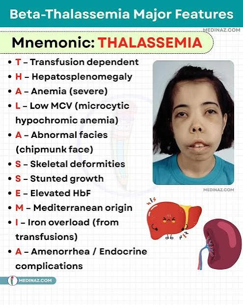

🩸 Sickle Cell, Thalassemia & Hemophilia
One clogs vessels, the other cannot form a clot. Both are inherited, and both have one intervention that matters most.
🩸 Sickle cell disease
Abnormal hemoglobin S makes red cells stiffen into a crescent shape when stressed. The rigid cells jam in small vessels, causing pain and tissue infarction.
Everything that triggers a crisis reduces oxygen or water. So treatment is simply the reverse.
| Trigger | Treatment |
|---|---|
| Hypoxia — altitude, infection, exertion | Oxygen |
| Dehydration | Aggressive hydration |
| Cold — causes vasoconstriction | Warmth |
| Stress, infection, acidosis | Treat the cause; analgesia |
Never apply cold to a sickle cell crisis. Cold causes vasoconstriction and worsens sickling. Warm compresses only.
Never give aspirin - it promotes acidosis, which worsens sickling. And pain relief is chronically under-given in sickle cell; opioids are appropriate.
🧠 What to know
- Autosomal recessive. Two genes = disease; one gene = trait, usually symptom-free
- Symptoms do not appear before about 6 months, because fetal hemoglobin protects
- Infection is the leading cause of death in young children — the spleen is damaged early, so penicillin prophylaxis and full vaccination are essential
- Acute chest syndrome — chest pain, fever, hypoxia, new infiltrate. A leading cause of death; a medical emergency
- Splenic sequestration — sudden splenic enlargement, rapid drop in hemoglobin, shock
🩸 Thalassemia
The body cannot build enough hemoglobin. An inherited (autosomal recessive) gene slows or stops one of the globin chains — usually beta. The red cells come out small, pale and fragile (microcytic, hypochromic) and break down early.
So the child is transfused — and the iron in all that blood becomes the danger.
Most common in families of Mediterranean (Greek, Italian), Middle Eastern, South and Southeast Asian and African descent.

| Sickle cell disease | Thalassemia (beta, major) | |
|---|---|---|
| What is wrong | Abnormal hemoglobin S — cells sickle and clog vessels | Too little normal hemoglobin — small, pale cells that break down early |
| Shows up | After about 6 months (fetal hemoglobin protects) | After about 6 months, for the same reason |
| Main danger | Pain crises, acute chest, stroke, infection | Severe anemia — then iron overload from transfusions |
| Key treatment | Hydration, oxygen, warmth, analgesia | Regular transfusions + iron chelation |
| Never | Cold, dehydration | Iron supplements |
🧬 Three types
- Thalassemia minor (trait) — one gene. Mild anemia with small cells, often no symptoms. Easily mistaken for iron deficiency, so iron is not given unless a deficiency is proven.
- Thalassemia intermedia — moderate anemia; transfusions only some of the time.
- Thalassemia major (Cooley anemia) — two genes. Severe anemia that appears in the second half of the first year, as fetal hemoglobin falls. Needs lifelong transfusions.
- The most severe alpha-thalassemia causes hydrops fetalis before birth.
👀 What you see in thalassemia major
- Pallor, fatigue, irritability, poor feeding, failure to thrive
- Enlarged spleen and liver (hepatosplenomegaly) from all the cell breakdown; jaundice
- The marrow overworks and expands: frontal bossing (prominent forehead), prominent cheekbones and upper jaw, and thin bones that fracture easily
- Bronze or grayish skin as iron builds up
- Delayed growth and late puberty
Diagnosis: CBC (low Hgb, small pale cells, target cells) and hemoglobin electrophoresis, which names the type.
💉 Treatment
- Regular red-cell transfusions, about every 3–4 weeks, to keep hemoglobin near 9.5–10 g/dL. That lets the child grow normally and quiets the overworking marrow.
- Iron chelation to remove the extra iron: deferoxamine as a slow subcutaneous (or IV) infusion over 8–12 hours, usually overnight, 5–7 nights a week, or the oral drugs deferasirox or deferiprone.
- Folic acid to support red-cell production.
- Splenectomy if the spleen is destroying too many cells — then pneumococcal, Hib and meningococcal vaccines, daily penicillin, and any fever is urgent.
- Stem-cell (bone marrow) transplant is the only cure.
🧠 Mnemonic: T-H-A-L-A-S-S-E-M-I-A (beta-thalassemia major)
- T — Transfusion dependent
- H — Hepatosplenomegaly
- A — Anemia, severe
- L — Low MCV: small, pale (microcytic, hypochromic) cells
- A — Abnormal face: frontal bossing, prominent cheekbones and upper jaw (“chipmunk” face)
- S — Skeletal changes and fragile bones
- S — Stunted growth
- E — Elevated fetal hemoglobin (HbF) on electrophoresis
- M — Mediterranean (and Middle Eastern, Asian) family origin
- I — Iron overload from the transfusions
- A — Amenorrhea and other endocrine problems (late puberty, diabetes, hypothyroidism) from iron in the glands

Never give iron supplements or iron-fortified vitamins to a child with thalassemia unless a true deficiency is proven. The child already has too much iron.
Iron overload (hemosiderosis) is the big long-term danger. Iron settles in the heart (heart failure and arrhythmias — the leading cause of death), the liver (cirrhosis), the pancreas (diabetes) and other glands (late puberty, hypothyroidism). Watch ferritin trends.
🩺 Nursing care and teaching
- Transfusion safety: two-person check, baseline vital signs, stay with the child for the first 15 minutes, and watch for reactions.
- Watch for iron overload and heart problems: ferritin, heart rate and rhythm, fatigue, swelling.
- Teach home chelation: the overnight pump, rotating sites, keeping it going most nights. Deferoxamine needs yearly hearing and eye checks.
- After splenectomy: infection precautions and an urgent call for any fever.
- Support body image (facial bone changes, short stature), school and normal activities.
- Genetic counseling — when both parents carry the trait, each pregnancy has a 25% chance of thalassemia major.
Exam trap: small, pale red cells do not always mean iron deficiency. In thalassemia trait, iron is the wrong answer.
From Pillitteri, Maternal and Child Health Nursing (ch. 44), Hockenberry, Wong’s Nursing Care of Infants and Children, and ATI Nursing Care of Children.
🩹 Hemophilia
A missing clotting factor — factor VIII in hemophilia A, factor IX in B. X-linked recessive, so it affects boys, carried by mothers.
| Lab | Result |
|---|---|
| aPTT | Prolonged |
| PT | Normal |
| Platelet count | Normal — the platelets are fine, the factor is missing |
| Bleeding time | Normal |
🚨 Hemarthrosis — bleeding into a joint
The hallmark. Warm, swollen, painful joint with reduced movement. Repeated bleeds destroy the joint permanently.
Treatment: RICE + factor
- Rest — immobilize; do not move it
- Ice
- Compression
- Elevate above the level of the heart
- Give the missing factor — this is the definitive treatment
No aspirin, no NSAIDs. Acetaminophen is the safe analgesic. No IM injections, no rectal temperatures, no contact sports.
✅ Living with it
- Swimming and cycling with a helmet are encouraged; contact sports are not
- Soft toothbrush; electric razor when older
- Medical alert identification
- Dental work needs factor cover
- Teach parents to recognize a joint bleed early — a tingling or warmth before visible swelling
🧸 And the third one: ITP
Immune thrombocytopenic purpura — platelets destroyed after a viral illness. Low platelets, petechiae and bruising, often in an otherwise well child. Usually self-limiting.
Hemophilia = normal platelets, missing factor. ITP = low platelets.
🎯 NCLEX traps
- Sickle crisis = oxygen, hydration, analgesia, warmth. Never cold, never aspirin
- Sickle symptoms start after 6 months
- Hemophilia has NORMAL platelets — only the factor is missing
- Joint bleed → immobilize, ice, elevate, give factor
- Acetaminophen only — no aspirin or NSAIDs in either condition